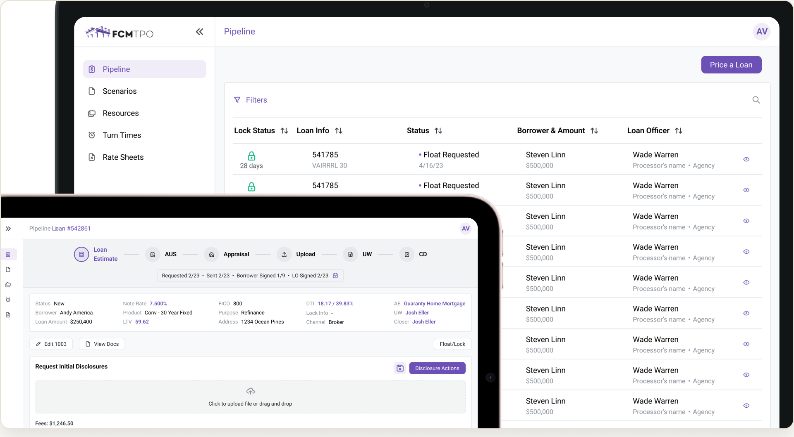
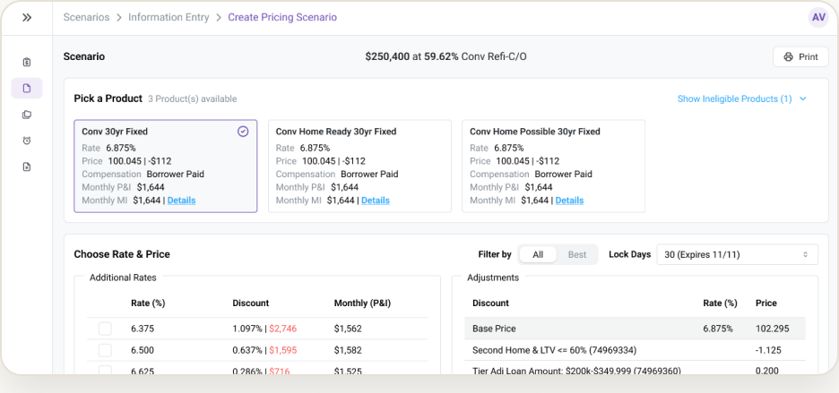
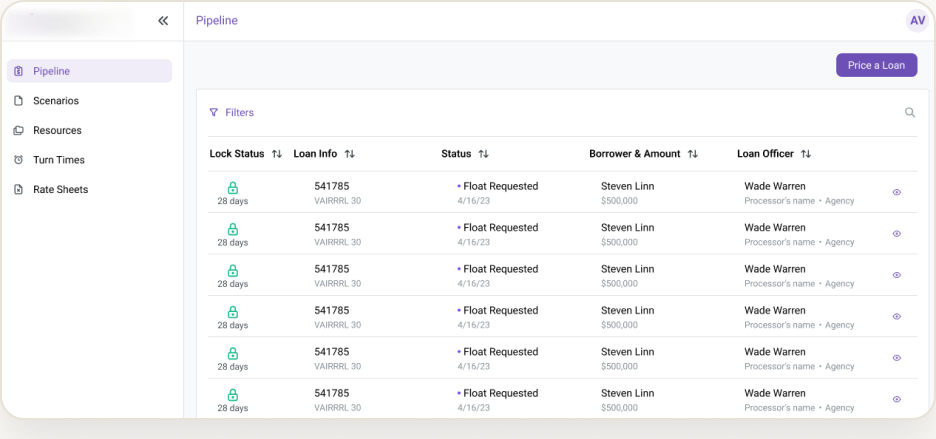

FINTECH · RESPONSIVE WEB
Mortgage Loan Management Platform
A legacy redesign for loan officers, processors, and admins working high-density financial data.
THE PROBLEM
A dense legacy platform forced loan officers through long, error-prone flows with no clear hierarchy. This slowed every loan down.
PROCESS
Studied the legacy flows
Shadowed how officers, processors, and admins actually move through a loan.
Rebuilt the hierarchy
Surfaced what matters per role, hid what doesn't.
Designed a modular loan view
One scalable pattern instead of many one-off screens.
Cut the key flow in half
Reduced a core flow from ~30 to ~15 clicks.
OVERVIEW
I redesigned a high-density mortgage platform around the people who use it all day, with three role-based views built on a modular loan structure that scales as the product grows.
IMPACT
−50% clicks
A key flow cut from ~30 to ~15 steps.
3 role-based views
Loan officer, processor, admin.
Modular loan view
One scalable pattern, not one-offs.
SCREENS


